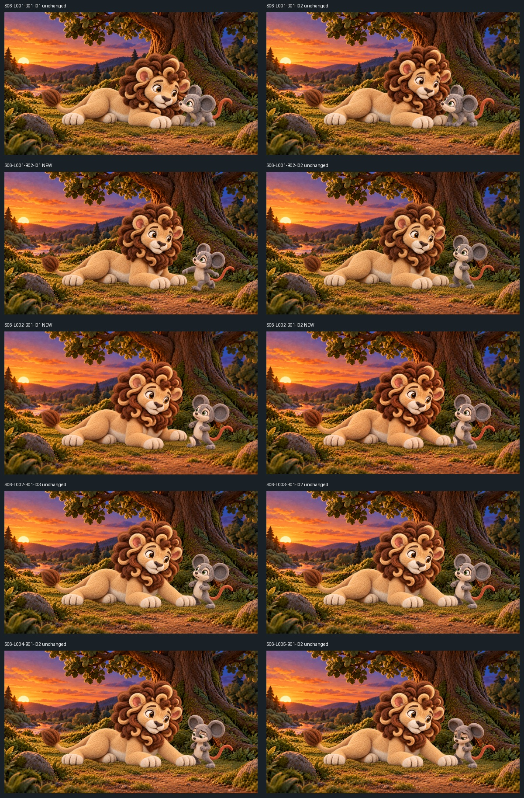
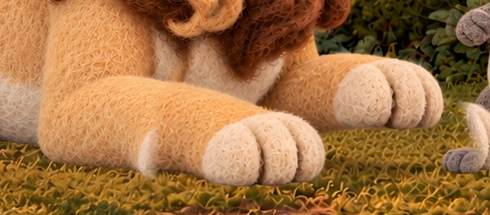
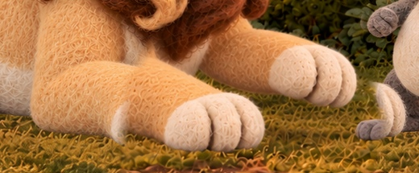
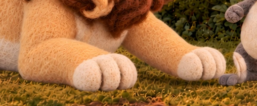
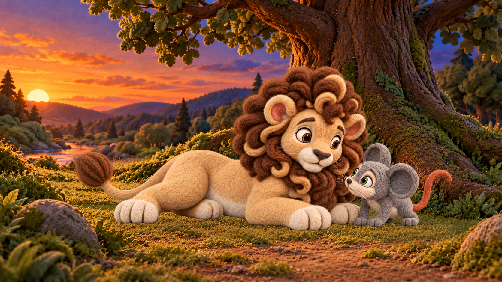
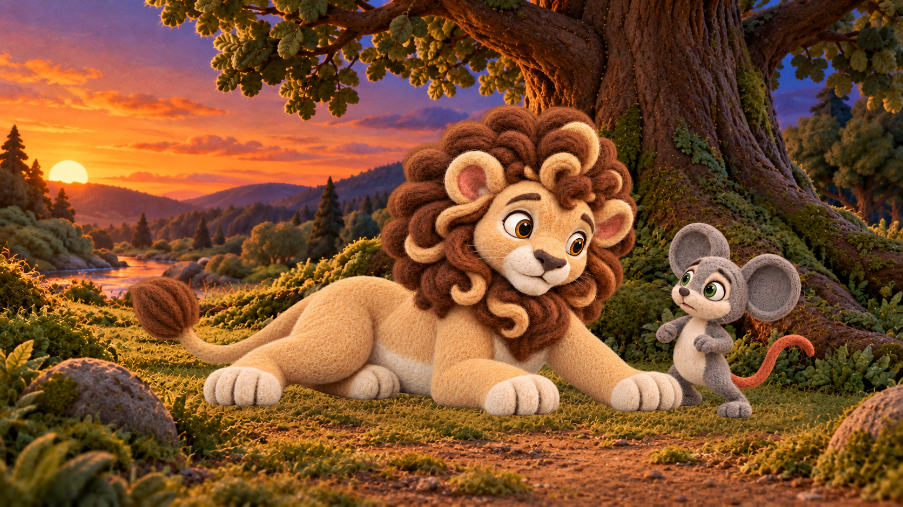
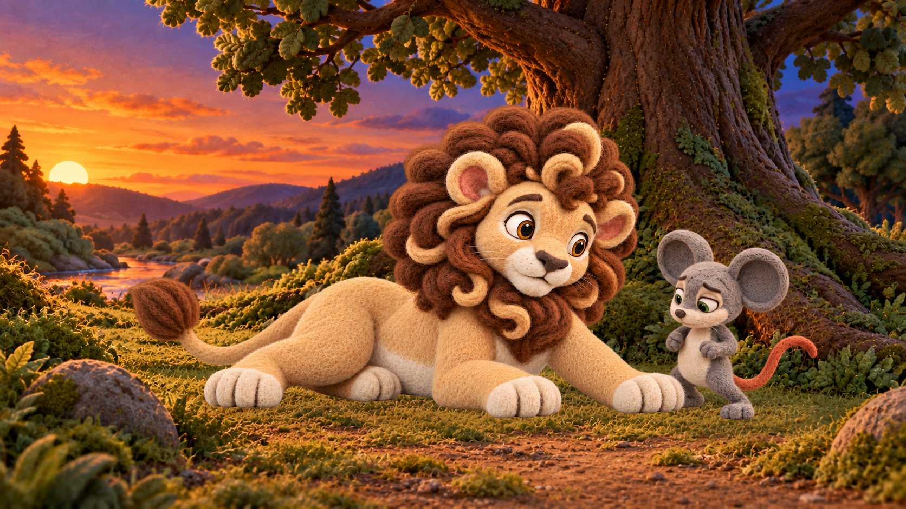

S06 source images — complete review set
Three new repairs; all remain unselected. Existing approvals are unchanged. Four built-in GPT image calls total: three initial edits and one bounded descending correction. No retries beyond that correction.
Open full sequence contact sheet · Exact files, hashes and alias map · Technical QA

Before / after repairs
S06-L001-B02-I01_scramble_descent_r010_candidate.png
Milo r010: torso and pelvis read continuously, two balancing arms and two bent legs attach coherently; face/ears/green eyes/tail retain identity. Stepping pose fits transition toward path arrival, though descent is implied rather than a visible drop. Ready for owner depiction review, not technical camera-lock pass.
Original


SHA-256 ab4be3c09a5783b86981f3afb1a5f5e9c54df2dc1a3527edd75f95ef45701613
S06-L002-B01-I01_front_paw_ready_r006_candidate.png
Ready r006: foreground paw has a simpler wrist/toe shape and reads supported; the far raised forepaw remains in a similar screen position, but exact preservation of the owner-liked paw is NOT established. Output is 1671x941, one column narrower. Owner visual review needed; technical gate remains blocked.
Original


SHA-256 c61a7ba88129cfc09e4b929876c4515644af2ab3b7b44f4b351799ad0068c90d
S06-L002-B01-I02_front_paw_descending_r007_candidate.png
Descending r007: corrected foreleg reaches down/right with continuous attachment and canonical cream felt paw; it is visibly closer to the final blocking destination. Paw sits very close to grass/Milo foot, so hover versus early contact needs owner inspection. Matches ready general paw shape, but exact scene preservation fails.
Original


New candidate


SHA-256 d2c80afc4b33387fadad5dd2d51836168725f62fae2079d03afab5643e6044c0
Initial descending r006 before targeted lowering
Open preserved initial attemptUnchanged scene images and selection status
S06-L001-B01-I01_start_rest_nose_r001_candidate.png
existing_owner_selected_scene_depiction

bc914de64088c20665c254e5e7a84a96bfaf282cb0d12781c42e0a61ff964dfd
S06-L001-B01-I02_head_raised_r005_candidate.png
unselected_or_visual_feedback_only

d5f82c7dc7691d9ed5ac7ad1789d1a1de78d1802db3ec0e1eab18e2d9f58b3b7
S06-L001-B02-I02_end_path_arrival_r001_candidate.png
existing_owner_selected_scene_depiction

2933f39200694de8b8ca03b9ece22ea204b5d5aa88e6d3a63ca5c22f63de46b0
S06-L002-B01-I03_end_front_paw_block_r001_candidate.png
existing_owner_selected_scene_depiction

c8a49ebe6bfc11eb69e07f307367e6cf6c304f3e8a0ab81e1339e466302fbd19
S06-L003-B01-I02_frozen_r002_candidate.png
unselected_or_visual_feedback_only

9b2873da9c1cebcd6f012e2bf55ee880ad5ad1bf0d6fde34f9d28bede1137503
S06-L004-B01-I02_worried_r002_candidate.png
unselected_or_visual_feedback_only

ceedf76502494c5b3006137154f865885bbf1b3e5296b35841cdb16f24ad5427
S06-L005-B01-I02_humbled_r002_candidate.png
unselected_or_visual_feedback_only
a3c8044b114c52e05ef515c5a55783b63bdb2801836e727e075470ddc31f5a8c
Review findings
The complete ten-raster timeline preserves the recognizable sunset/tree/river/stone composition and handmade felt style. Leo stays lying through head raise and front-paw block; Milo moves from nose to viewer-right and retains the selected worried/humbled facial arc. Relative size appears plausible in the wide view, but no physical depth calibration or full-motion continuity pass is inferred. Generated outputs change texture and protected pixels outside the intended edits, including Leo details, so they cannot be certified pixel-locked. The ready image has a one-column size discrepancy. Other S06 images were not altered.
Owner decisions: accept/reject each new depiction. r009 remains a separately accepted prior Milo option and has not been replaced in any binding. No new canonical/performance/video approval is granted. S05 rear-paw contact remains a separate unchanged blocker.